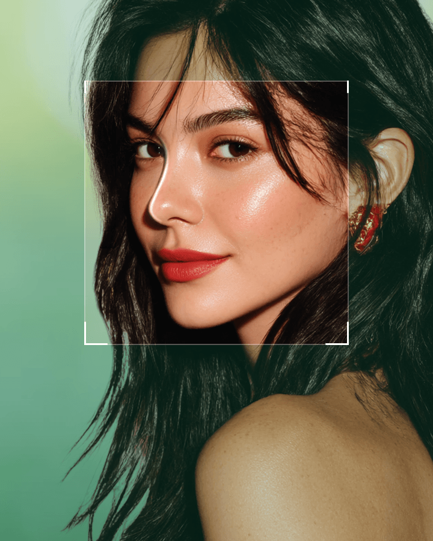
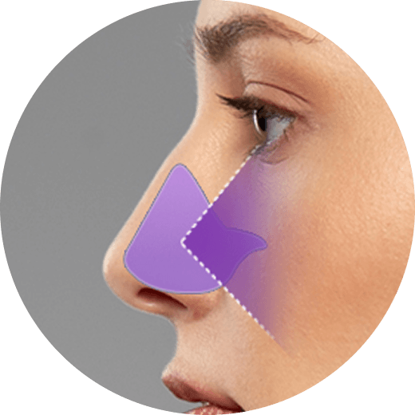
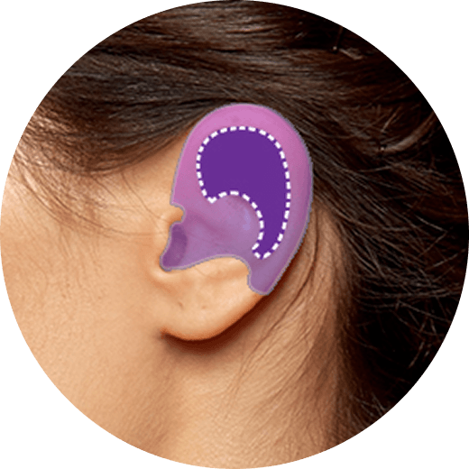
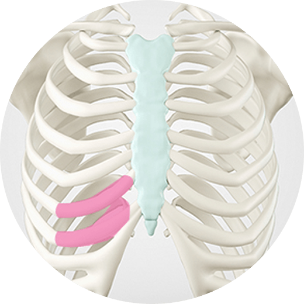
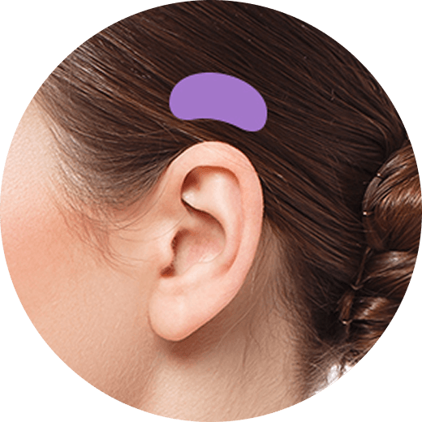
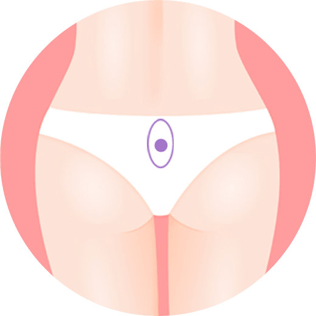
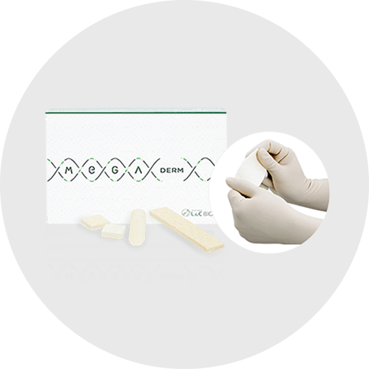
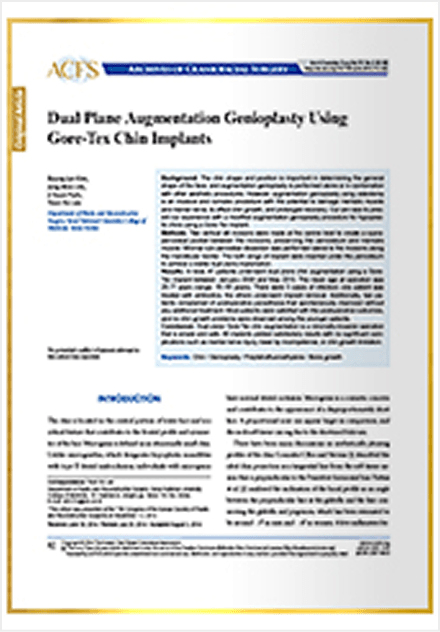
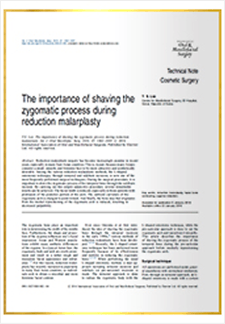
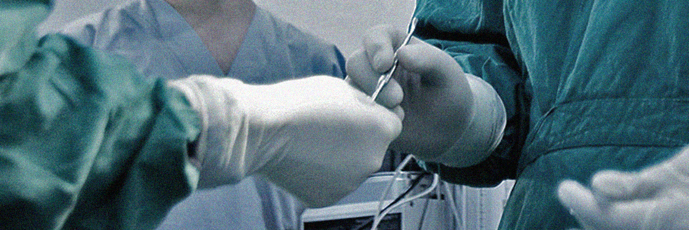

如自然光般—an 优雅,
用您自身软骨塑造的自然线条。
申请号 40-2023-0120977
为什么鼻部手术选择 凡是与美？
使用您自身组织，实现自然的鼻梁与精致的鼻尖！

使用鼻中隔软骨塑造清晰的鼻梁
无需人工假体，让鼻尖更挺翘精致！
柔软有弹性的耳软骨，取材后也不易察觉
与鼻尖软骨相似，触感自然，不适感极低
微创切口减少疤痕顾虑
鼻型随时间保持稳定！
为较薄的鼻尖皮肤提供柔软支撑
减少鼻尖透光感
富有弹性的自体真皮脂肪
自然保持分明的鼻部线条
经 MFDA 批准的认证捐献组织
适用于已使用过自体组织的修复病例
自体组织的精细管理
吸收率最小化，鼻尖形态持久

增强固定 + 鼻部同时更显纤细
塑造立体的鼻尖
凡是与美自体肋软骨鼻整形流程

With a 微创 切口 under the 胸部线条的改变, the 疤痕 is 隐藏 下方 the 胸部 fold.

仅采集必要数量的自体肋软骨。

将肋软骨雕刻成与患者鼻型匹配的形状，并植入所需区域。

通过 凡是与美自体肋软骨鼻整形，实现自然清晰的鼻部线条。
Using a 微创 2-3cm 切口 under the 胸部线条的改变, 疤痕 is minimized and 软骨 is harvested 快速
采用避免气胸风险的安全成熟方法。


肋软骨略有弯曲，直接使用可能随时间变形。
在 凡是与美，我们通过精准切割雕刻肋软骨来防止变形。
在 凡是与美，鼻整形由经验丰富、解剖学知识深厚的专职整形外科医生实施。


恢复才是真正的开始！专业术后管理
暂无帖子

凡是与美医学论文大数据
凡是与美医学论文大数据通过整形外科与耳鼻喉科专家的协作，我们提供兼顾美学与功能的卓越效果。
获得韩国保健福祉部认证，确保安全的医疗体系

通过耳鼻喉科与整形外科的协作，实现功能与美学的双重卓越。
为美丽困扰提供根本性解决方案
各领域认证专家，致力于以患者为中心的医疗服务